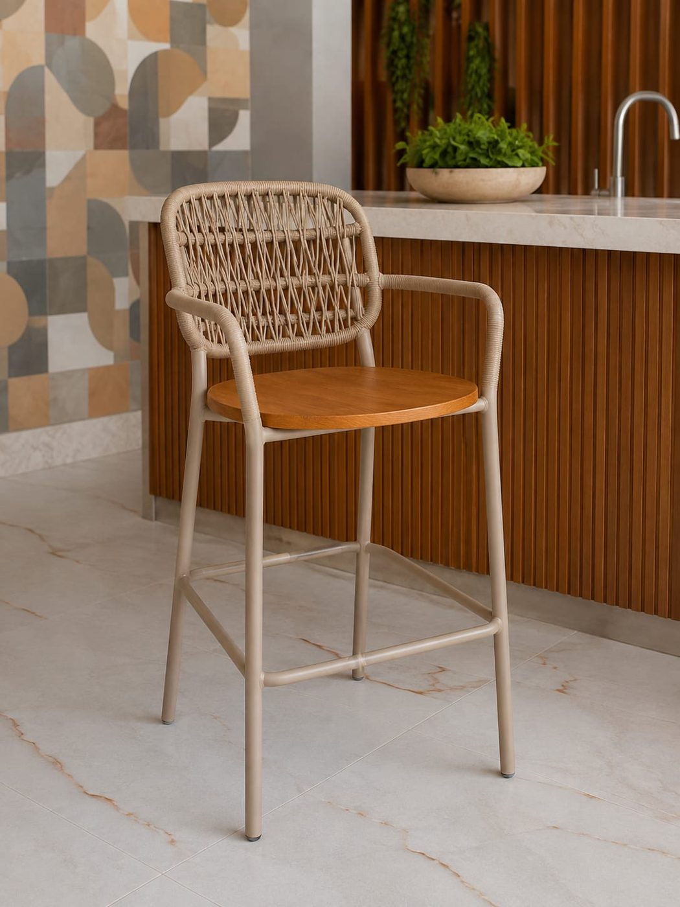

Poucas coisas deixam a área gourmet tão acolhedora quanto o cheiro de alecrim assando junto com a carne ou de manjericão fresco sobre a massa. Uma hortinha de temperos ao alcance da mão traz verde, perfume e praticidade: você colhe na hora, sem sair do ambiente onde recebe os amigos. E o melhor é que não exige quintal grande. Veja como começar.
1. Escolha o lugar pela luz e pela praticidade
A maioria das ervas aromáticas gosta de bastante claridade, em geral algumas horas de sol direto por dia. Observe a área gourmet ao longo do dia e escolha o canto mais iluminado, de preferência perto da bancada ou do churrasco, para colher com facilidade. Fique atento ao calor das churrasqueiras e dos fornos: vasos muito próximos do fogo ressecam depressa e podem se queimar. Uma distância confortável também ajuda a manter a fumaça longe das folhas.
2. Ervas que costumam se dar bem
Para quem está começando
Manjericão, hortelã, cebolinha, salsinha e orégano estão entre as mais populares e costumam perdoar pequenos descuidos. A hortelã cresce com muita vontade e tende a tomar o espaço das vizinhas, então vale mantê-la em vaso próprio. O manjericão agradece sol e rega regular.
Para dar estrutura e perfume
Alecrim, tomilho e sálvia preferem sol pleno e substrato bem drenado; não gostam de ficar encharcados. O alecrim, em especial, forma arbustos bonitos e combina muito com o clima de churrasco. Pergunte ao viveirista de confiança quais variedades se adaptam melhor ao clima da sua região.
3. Vasos, jardineiras e suportes
Vasos individuais facilitam a vida: cada erva recebe a rega e o sol de que precisa. Já jardineiras longas, junto ao guarda-corpo ou na beira da bancada, deixam a horta com ar de composição. Escolha recipientes com furos de drenagem, coloque uma camada de argila expandida ou brita no fundo e use substrato próprio para vasos. Se preferir ganhar espaço no chão, prateleiras e suportes de parede, ou até uma escadinha de madeira, levam as ervas para o alto, na altura das mãos de quem cozinha.

4. Rega e cuidados do dia a dia
Em vaso, a terra seca mais rápido do que no canteiro. Regue de manhã cedo ou no fim da tarde e confira com o dedo: se a terra estiver seca a uns dois centímetros de profundidade, é hora de molhar. Evite empoçar água no pratinho, que pode apodrecer as raízes e atrair mosquitos. Colha sempre as pontas dos ramos, em pequenas quantidades, e nunca tire mais do que cerca de um terço da planta de uma só vez: assim ela rebrota mais cheia. Retire flores de manjericão e hortelã para prolongar a produção de folhas.
5. Um detalhe sobre os móveis e o piso
Água de rega escorrendo, terra e folhas caídas pedem atenção ao piso e aos móveis. Use pratinhos e suportes que segurem a água, prefira posicionar os vasos longe de estofados e almofadas e varra o chão com frequência. Móveis de corda náutica e as estruturas tratadas para área externa suportam bem o ambiente aberto, mas ficam mais bonitos e duram mais quando você limpa respingos e evita deixar vasos molhados encostados na trama. Para mais dicas, veja nosso guia de como cuidar de móveis de área externa.
6. Combine verde, mesa posta e conforto
Quando a horta está pronta, o ambiente pede um lugar bom para sentar e aproveitar. Uma mesa com cadeiras confortáveis, banquetas na bancada e uma iluminação aconchegante completam a cena. Se quiser planejar o espaço, leia também sobre como escolher mesa, cadeiras e banquetas para a área gourmet e sobre paisagismo para varanda, piscina e área gourmet.
7. Antes de renovar os móveis, planeje o prazo
Se a hortinha despertou a vontade de renovar o mobiliário da área gourmet, lembre que as peças da Trama Artesanal são feitas sob encomenda, com 45 dias de fabricação mais o tempo de transporte, e contam com garantia de até 2 anos. O frete grátis depende do estado e do valor da compra (no Paraná, a partir de R$ 1.200), e o pagamento via Pix tem 20% de desconto. Por isso, o ideal é planejar com antecedência e confirmar os prazos com a nossa equipe antes de marcar qualquer data para receber a mesa cheia.
As imagens deste artigo são ilustrativas e servem de inspiração; as peças e medidas disponíveis podem variar.